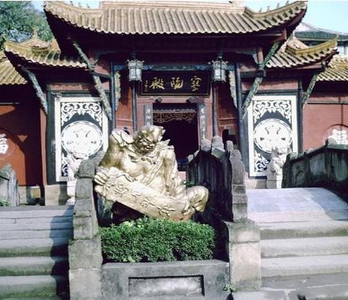
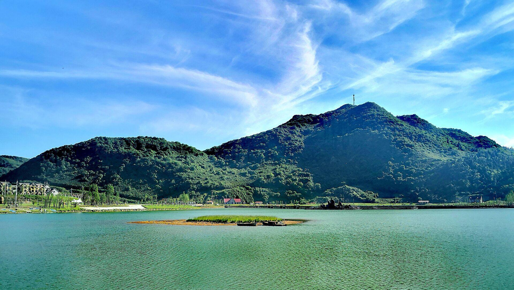
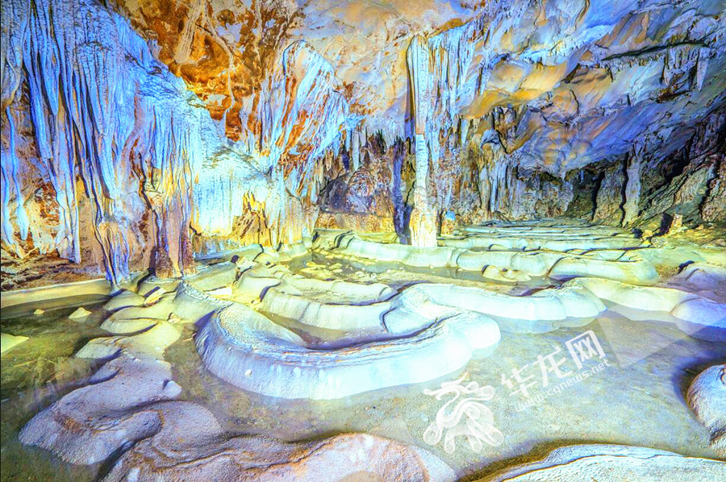

名山鬼城
起源于汉代的历史文化名城——丰都，被当时的人们传为“鬼国京都”、
“阴曹地府”，成为人们亡灵的归宿之地。它不仅是传说中的鬼城，
还是集儒、道、佛为一体的民俗文化艺术宝库，堪称中国《神曲》
之乡。丰都名山位于重庆市下游172公里的长江北岸，从重庆市乘车
船3小时即可到达，是长江黄金旅游线上著名的人文景观。名山风景
区融合了巴渝文化、中原文化和域外文化，形成了独具魅力的民俗文
化特色。美国前国务卿基辛格生动地称赞名山为“东方神曲之乡”，正
是因为名山风景区依托人们对地府的种种设想，借助人间司政的组织
结构，形成了善恶分明的鬼神形象体系，为世人描绘出一个生动形象
的鬼神民俗文化世界。从古至今，关于丰都名山的文学作品众多，涵盖
诗词、楹联、小说等多种题材，是中国民俗文化的重要组成部分和具象
表现。其中《西游记》、《聊斋志异》、《说岳全传》、《喻世明言》、
《东游记》等大家熟能详的著作，更使得名山风景区名扬天下。在名山
风景区各处殿堂和山路沿线，各式各样的彩塑、石雕高度集聚，形成主
题鲜明、移步换景的名山鬼神文化景观。景区里模拟了人间的诉讼、法庭、
监狱、酷刑，构思奇特、神态逼真，通过对想象中的地府的描绘，体现了
中国古代社会森严的等级制度，也反映了古代劳动人民对正义、对光明的
渴求，并在漫长的历史发展过程中，演绎形成了以“惩恶扬善、唯善呈和”
为特质的“上善文化”精髓。 其中座落于名山之巅、始建于西晋的天子殿，
就是依托人们对阴曹地府的种种想象，借助人间司政的组织形态，塑造出
善恶分明的鬼神形象体系，描绘出一个生动形象的鬼神世界。

澜天湖景区
丰都澜天湖与武隆仙女山毗邻，夏季常年保持在21℃，环境优美，植被丰富，
随处可见牛马成群，为名副其实的“世外桃源”。正式开园后，这里可容纳500
0人露营，西南地区最大的滑雪场也将在冬天启用。澜天湖景区依托天然的南
天湖而建。据专家考证，南天湖是距今大约2500万年前，喜马拉雅造山运动过
程中形成的。目前，湖水面积有600亩。南天湖海拔高度最低1495米，最高195
0米，平均温度9.2℃，最高气温27℃，最低气温-7℃。南天湖畔，环湖小径上
已有游客漫步。再远一点，西班牙风格的五星级酒店藏身林间。景区的马路上，
随时会偶遇马群、牛群。这里的生态旅游资源十分丰富。集原始林竹、岩溶绝
壁、天坑地缝、高原古湖，草坪绿洲，山地文化为一体。不仅如此，这里还是
一个盛产民歌民谣和传说故事的地方，是生态旅游的最佳选择。 选其精华一共
组成六大景区：牛牵峡景区、杉树坪景区 、板栗园景区、山王殿景区、鸬鹚池
景区 、南天湖景区

雪玉洞
雪玉山国际旅游度假风景区位于，地处于武陵山七曜山脉，海拔高度1200—1988
米，森林面积达13万亩，森林覆盖率达90%，年均气温12-23摄氏度，空气质量达
国家一级标准。 天然负氧离子含量12万个/cm³，是重庆主城区的100倍。境内植
被丰富，物华天埠，尤其是丰富的水利资源水质极佳。雪玉山拥有高山湿地、原始
森林、洞穴、溪流、地下河、天然樱花林、野玫瑰林、天然草场、唯妙唯肖的猩猩
峰、神龟岭、红绿相映的四面山、珍贵植物桫椤树、红豆杉等丰富靓丽的旅游资源。
具有“天生太极、天生龙宫、天生地迷”三绝的生态景观！ ，雪玉洞是世界罕见的正
在快速成长的洞穴“妙龄少女”。据专家考证，距今8万年5.5万年间，雪玉洞才开始发
育于龙河边上；距今1万年以内，洞内环境才改变为有利于次生化学物的生成和发育，
其他洞穴，钟乳石景观一般是几万年到几十万年前生成的，质地老化，色泽暗淡。而在
雪玉洞，除极少数有四、五万年历史外，那些浩如烟海、色泽如玉、千姿百态、美不胜
收的沉积物景观，都是在3300年至1万年之间生成的。这些洞穴景观酷似一群花季少女，
正处在快速成长时期。洞穴沉积物景观的生长速度，一般是100年一毫米左右，而雪玉洞
既达到100年33毫米。
